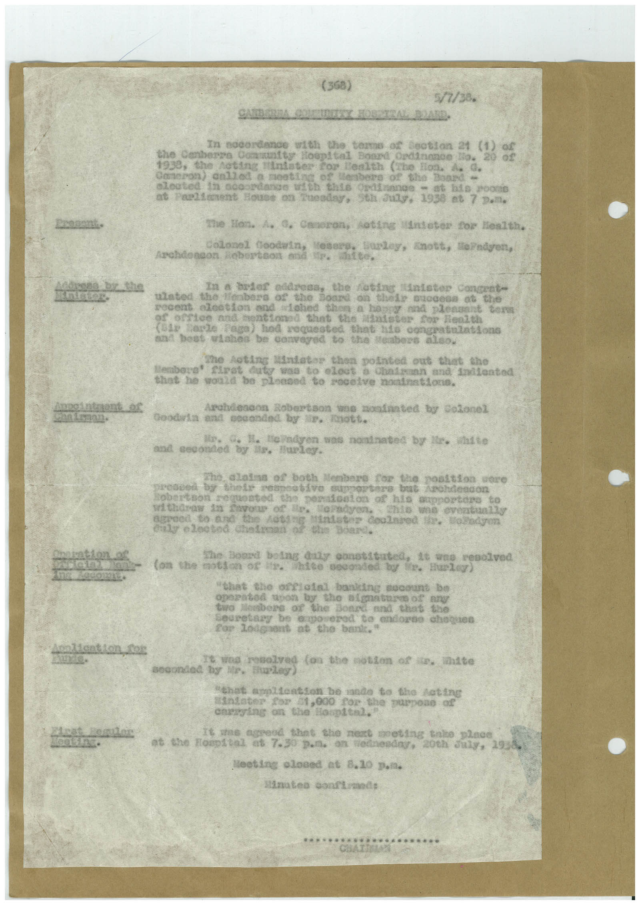

Book 1 · scan 057


Description
Transcription
Context
Review notes
Compare the machine draft with the scan. Handwriting and names need human review.
Artifacts
Edit the artifacts field in this note’s frontmatter to change these records. This summary is generated.
B01-S057-A01 — Typed document — Book 1, scan 057
Types: Typed document
Scope: Whole scanned page; individual items can be split out during review.
Caption: Not mapped yet.
Caption source: Not recorded yet.
Caption status: unmapped
Machine transcription
(368) 5/1/38. In nocordance with the toma of Cootion 21 (1) the Canberra Community Hoopital Board Ordinance To. 20 1938, the noting finlater for lenith (The Ion. A G. Ganeron) aniled a moating of lenbers of the Board - alcated i1 goosedango with thie Ordinnes - at bis soone at Feelinent House on Zueeday, Sth аиду, 1930 et 7 р.л. The Hon. " Canopony -Acting (Enseter for Mealth, Colonel Goodwin, Losers, Sunder, Archdondon Robertson esdr. anots, HePndyen, catte. In a briet address, the Coting intater concent- ulated the flenberg of the hosza on their auogesa of the pocent alestion and lobed then a happy and plepunnt on bertee and heationed that the ladster for Health Carte Rega) had requested that nto congratiniations and beat wishes be cosvered to the seabors aleo, Mintater thon pointed out that the Herbore! duty won to eloct & Chatmann and Indented that he would pleased so roceive noninstiond. Archdeaoon Robertson une montanted by Colonel Goodila and seconded by lin, tott. readyen was nontnated by white and seconded Hurley. Sobertion Only elected the noalsion upre ative supportera bat Anchdesson operatoston of his supportors to Порадуел. who eventually Mindster Coolated 1. Nobodyen bone daly ennesitated, ma65 hite seconded by 1, Hurley "Chat the ore atal banking soomant be operated upon by the signature of any two Members or the Board and that the Secretary De @gonered to endors chogues For lodgaent at the bant." -wes resolved ton the notion of in, inite seconded by in unles "that apoltention be made to the Acting Mandater 2o2 01,000 Top. the purpose of changing on the lospital," Te sne agrend tant the neit cooting tate place the Hospital 08 7.30 D.л. on wednesday, 20th July, 19. Meeting olosed at 8.10 p.л. Minateo coultened: